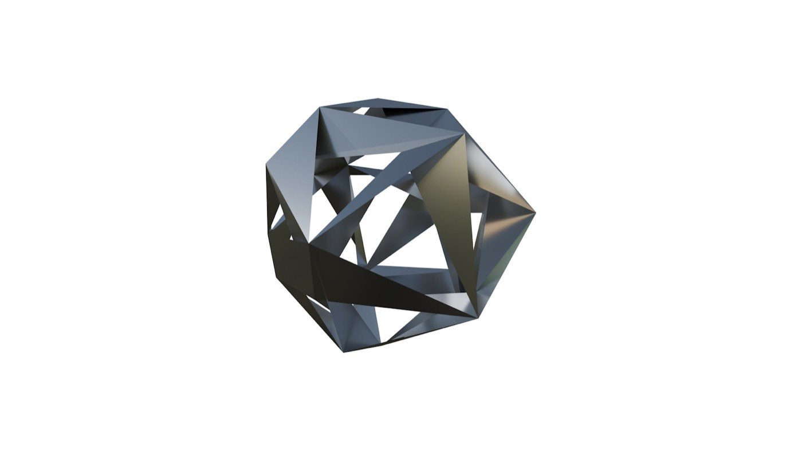

Три протокола делят экономику, в которой ИИ-агенты сами ищут, торгуются и платят. Ниже — их реальное состояние без витринных цифр и 36 проектов с вердиктами: что строить сейчас, что проверять спросом, что придержать.
Автономная оплата агентами пока буксует: OpenAI свернул Instant Checkout, доверие потребителей — 14%. Но слой discovery уже растёт трёхзначными темпами, а мерчанты и B2B к нему не готовы. Деньги ближайших 6 месяцев — не в объёме микроплатежей, а в подготовке рынка: интеграции, аудиты, feed-работа, обучение — плюс дешёвые x402-эндпоинты, которые застолбят позицию до бума.
Из трёх протоколов принять деньги сегодня соло-разработчику реально только через x402 (USDC на Base, без Coinbase и KYC). ACP закрыт гео-гейтом (US-only + Stripe), AP2 — слой авторизации без собственного рельса, роль оператора закрыта под PCI-кошельки. Поэтому стратегия двойная: продавать услуги фиатом уже сейчас + держать x402-эндпоинты как ставку на кратный рост.
Рынок уже расставил стандарты по уровням: внизу — расчёты, в середине — оформление заказа, сверху — доверие и авторизация. Победителя-монополиста не будет; зарабатывать можно на каждом слое отдельно — и на «переводах» между ними.
HTTP-код 402 ожил: сервер называет цену в USDC, агент подписывает платёж и повторяет запрос. Без аккаунтов, ключей и карт. 1–2 сек на Base, ~400 мс на Solana.
ПРОД. Работает, органика малаСтандарт корзины и передачи оплаты агентом: product feed, checkout-эндпоинты, Shared Payment Token. Живёт в ChatGPT-экосистеме и у Microsoft Copilot.
ПРОД-ЧАСТИЧНО. Checkout свёрнут, спека живаКриптографические мандаты Intent → Cart → Payment: агент не может потратить больше и не то, что подписал человек. Рельс чужой — карты или x402.
ПИЛОТЫ. Спека в FIDO, масс-маркета нетПрогнозы расходятся от $144 млрд до $5 трлн — не потому, что кто-то ошибается, а потому, что каждый считает под словом «agentic» разное: от прямых продаж на AI-платформах до всего «оркестрированного» агентами объёма вместе с логистикой и платежами.
| Источник | Метрика и горизонт | Прогноз | Что входит |
|---|---|---|---|
| McKinsey окт 2025 | Глобальный объём к 2030 | $3–5 трлн; $1 трлн US-retail | Самая широкая рамка: товары + B2B + логистика + платёжная инфраструктура |
| Gartner окт 2025 | Доля B2B-закупок к 2028 | 90% B2B, >$15 трлн спенда | Закупки с участием агентов; +33% enterprise-приложений с агентами |
| Bain дек 2025 | США к 2030 | $300–500 млрд = 15–25% e-comm | Узкое определение: AI-поиск не считается. Первыми — commodity, потом apparel и travel |
| Morgan Stanley | US e-comm к 2030 | $190–385 млрд (10–20%) | Только потребительский e-commerce США |
| Juniper апр 2026 | Глобальный спенд к 2030 | $1.5 трлн | Консервативнее McKinsey |
| eMarketer | Прямые продажи на AI-платформах к 2029 | $144 млрд | Самая узкая рамка — только чек внутри AI-интерфейсов |
| Everest Group | Transaction volume к 2030 | $3–5 трлн | Procurement + подписки + travel + B2B settlement |
65% доверяют ИИ сравнивать товары, но лишь 14% — совершать покупку. Accenture (25 590 чел., 16 стран): полностью автономную покупку одобряют 9%, автономию на оплате — 12%.
Галлюцинации и ошибки — барьер №1 по опросам (55%, Futurum). Один неправильный заказ агента = потерянный клиент навсегда.
Visa и Mastercard ждут роста AI-identity-атак и синтетических ID в 2026. Кто отвечает за ошибку агента — юридически не решено (IMF, апр 2026). Chargeback в блокчейне отсутствует.
85% энтерпрайзов набирают <40/100 по индексу agent-readiness. Bain: 30–45% используют genAI для ресёрча, но к end-to-end транзакции не готово большинство. Это не барьер — это рынок услуг.
Статус июль 2026. Органика на плато: $1.2M/мес на всю экосистему, ~50% витринных транзакций — wash (Artemis). Дневные транзакции выросли на 321% за 3 месяца (до 672 800/день) — но средний чек упал до $0.11: рост дают микроплатежи Travala и wash, не долларовый объём. Институционализация идёт: с апреля протокол под Linux Foundation (Google, Microsoft, Visa, AWS, Stripe), Fiserv вошёл charter-членом, AWS CloudFront получил нативную поддержку x402, Cloudflare открыл waitlist Monetization Gateway — включая плату за MCP-инструменты.
Self-hosted синтез речи (в ~7 раз дешевле OpenAI TTS) за микроплату USDC — компьют-услуга, одна из двух реально денежных категорий.
Парсеры труднодоступных русскоязычных данных (рынок труда, зарплаты, компании) как платный data-API — данные это 30.9% активности экосистемы и главная денежная категория.
Done-for-you: подключаю SaaS/API/боту приём агентских платежей без Coinbase и KYC. Клиент платит фиатом сегодня — доход не зависит от объёма самого x402.
Обернуть 1–2 премиум-инструмента живого MCP-сервиса в pay-per-call — Cloudflare прямо позиционирует «charge for MCP tools» как категорию.
Хостить x402-rs фасилитатор + гайд, продавать сегменту с теми же KYC-ограничениями: «решённый приём + off-ramp» как сервис.
Платная услуга: сделать чужой эндпоинт находимым — Bazaar-регистрация, метаданные, листинги, MCP-каталоги. Боль задокументирована в issue-трекере протокола.
Узкий verify/enrich-эндпоинт по русскоязычным юрлицам (ИНН/ОГРН/арбитраж) per-lookup — verify-запросы высокочастотны у агентов.
Стартер-репозиторий (FastAPI/Node + фасилитатор + примеры) — бесплатный магнит, воронка в интеграции «под ключ» (идея 3).
Модель blockrun (cost+5%) с RU/GEO-нишей. Потолок категории доказан ($25k/мес), но маржа тонкая и есть ToS-риск перепродажи апстрима.
Оплата USDC за сгенерированный пост/лендинг/SEO-артефакт. Агентская готовность платить за контент не доказана; людям удобнее подписки.
Продавать исследования (как это) за USDC-микроплату. Новизна без денег — максимум демо-витрина для интеграционного оффера.
Свой end-to-end агентский сервис в вертикали с оплатой x402 — как Travala с 2.2M отелей. Главный драйвер июньского всплеска, но нужны инвентарь и партнёрства.
Статус июль 2026, противоречие разрешено. OpenAI действительно откатил Instant Checkout в марте 2026: из «миллиона Shopify-мерчантов» живыми стали меньше 15, конверсия в чате оказалась втрое ниже сайта мерчанта (данные Walmart), не решили sales tax, антифрод и синк остатков. Но сам протокол ACP жив и развивается: спека 2026-04-17 (cart, feed, orders, auth, MCP), 5 релизов за 7 месяцев, governance OpenAI+Stripe. Новая модель — «discover in AI, buy on your site»: витрины-приложения в ChatGPT (Walmart, Etsy, Sephora, DoorDash, Instacart, CarMax, Lowe's, Expedia), а чекаут — на инфраструктуре мерчанта.
Done-for-you: чтобы магазин цитировался и рекомендовался в ChatGPT/Perplexity/Gemini. Рыночный якорь цены уже есть: $2–8k/мес mid-market.
Автоаудит каталога магазина против требований ACP/UCP (обязательные поля, availability, GTIN, политики) со скором и fix-листом. Бесплатный скан — лид-магнит, фикс — апселл.
Batch-переписывание title/description по принципу «пиши для агента, не для SEO» — $0.10–0.50 за SKU, каталог на 2000 SKU = $200–1000 разово плюс рекуррент на обновления.
Платный вебинар/когорта для RU/CIS-предпринимателей и диаспоры: как попасть в выдачу AI-ассистентов до конкурентов.
Бесплатный мини-скан + серия GEO-статей, закрывающих поисковый спрос «как попасть в ChatGPT-рекомендации». Верх воронки для всех платных услуг трека.
Webhook-ingestion + дашборд заказов из AI-каналов. У агентских транзакций нет click-данных — атрибуция признана нерешённой болью на 18–24 месяца вперёд.
Open-source ACP-эндпоинты (cart/feed/delegate-payment/orders) как Docker-шаблон; продажа внедрения кастомным платформам вне Shopify-экосистемы.
Живая честная витрина: платформа / протокол / live или нет / GMV раскрыт или нет. Продолжение этого ресёрча как цитируемый reference.
Микро-SaaS/CLI: превратить выгрузку любой платформы в валидный агентский фид + хостинг фида.
Стать внедренцем-партнёром чужого «Buy Now across AI»-API: setup-fee + маржа, без собственной платёжной инфраструктуры.
Подписка следит за GitHub-спеками (5 версий за 7 месяцев!) и алертит, когда чья-то интеграция протухла.
Выставить русскоязычные каталоги агентам через MCP на базе готовых парсеров. Рынок RU-агентской коммерции ещё не созрел.
Статус июль 2026. AP2 — слой авторизации, не платёжный рельс: мандаты Intent → Cart → Payment, подписанные ECDSA. В апреле Google передал протокол в FIDO Alliance (v0.2.0, Human-Not-Present, Verifiable Intent с Mastercard). Живые деньги — точечно: PayPal Conversational Commerce, пилот Mastercard Agent Pay, «сотни контролируемых транзакций» у Visa, первый европейский end-to-end платёж (Worldline + ING, июнь). На I/O 2026 показаны Gemini Spark и Universal Cart (Nike, Sephora, Target, Walmart, Wayfair) — раскатка по США «этим летом». Массового прода нет.
Контент-справочник по AP2/ACP/x402/UCP/KYA под цитирование в LLM-ответах. Авторитетного русскоязычного источника нет — ниша пустая.
Веб-симулятор: сгенерировать Intent/Cart/Payment-мандат, подписать, провалидировать. Официального sandbox не существует — дыра на виду.
Платный аудит готовности бизнеса к агентскому чекауту: каталог, фиды, schema.org, API. Западный аналог продаёт это энтерпрайзу за $5–25k — ниша SMB свободна.
Когорта: разработчикам — как строить с AP2/x402/MCP; фаундерам — как подготовить бизнес. Русскоязычных материалов почти нет, тема на хайпе.
Сервис «каталог, читаемый агентами»: schema.org/Product, агент-фиды, API-адресуемый чекаут. Та самая data-work, которую интеграционные слои не убирают.
Фикс-прайс пакет $300–1500: подключить Shopify/Woo-магазин к агентскому чекауту. Universal Cart уже включает Shopify-мерчантов — страх «выпасть из выдачи» реален.
PR-ы в репозитории протоколов (в AP2 всего 54 коммита — заметным стать легко), разборы, листинги. Множитель для всех остальных идей.
Ранний листинг-сайт «кто уже agent-ready»: вендоры, интеграторы, мерчанты. Аналоги появляются — окно ещё открыто.
Голосовой агент-чекаут: Cart Mandate озвучивается («подтвердите $X»), подпись биометрией. Демо под продажу голосовых проектов.
Крипто-нога AP2 (a2a-x402) поверх живого MCP-актива — референс «принимаю агентские платежи», продающий консалтинг.
Генерация и проверка идентичности агента (ERC-8004-совместимо). Рынок называют «table stakes», но энтерпрайз уже заняли Sumsub и Vouched.
Проверка «подписанное = списанному» по аудит-трейлу ECDSA. Споров и регуляторики ещё нет — значит нет и спроса.

36 идей — это меню, не план. План — последовательность: услуги фиатом дают деньги сейчас, дешёвые эндпоинты стейкают позицию, контент кормит и то и другое. Формат «продукт в неделю» работает так: каждую неделю — один запуск из очереди ниже, с жёсткими гейтами и правом закрыть ветку.
Coinbase-зависимые пути закрыты для профиля; ЕС с апреля 2026 запрещает крипто-услуги RU-связанным провайдерам. Решение: self-hosted фасилитатор, self-custody, услуги — фиатом от юрлиц вне РФ, клиентский объём — на стороне клиента.
Органика x402 — $1.2M/мес на всю экосистему, половина — wash. Прямой доход от агентов в первые месяцы — центы. Решение: эндпоинты только как витрина со стоимостью ≤1 сессии, деньги — от услуг.
Shopify/Adyen/Google автоматизируют feed-работу; Bazaar может починить находимость; Google может выпустить официальный sandbox. Решение: держаться за data-work и экспертизу, не за разовые механические ниши.
ACP — 5 версий спеки за 7 месяцев, AP2 — v0.2.0. Интеграции протухают. Решение: закладывать поддержку в прайс, мониторить спеки (это же — идея ACP-11).
36 идей = соблазн распыления. Решение: очередь выше, гейты необсуждаемы, кап 12–15 сессий, дальше — только то, что прошло гейт.
| Горизонт | Реалистичный сценарий | Оптимистичный сценарий | Что должно произойти |
|---|---|---|---|
| 1–2 мес | $0.5–2k разовых (аудиты, интеграции, рерайты) | $3–6k (2–3 интеграции + ретейнер) | Пройдены первые гейты, тёплая база конвертит |
| 3–6 мес | $1–4k/мес (ретейнер + услуги + курс) | $5–12k/мес (2 ретейнера + конвейер аудитов + когорты) | Хаб цитируется, инбаунд пошёл, эндпоинты дают референс-кейсы |
| 6–18 мес (если бум) | Кратный рост услуг + эндпоинты начинают платить сами | Позиция «первого RU-эксперта» = премиальные ставки, поток лидов, готовые рубильники монетизации | Карточная нога AP2 выходит в масс-маркет, находимость x402 чинится, influence-слой конвертится в транзакции |